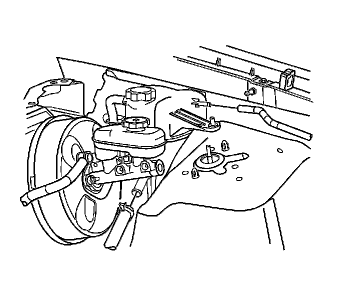
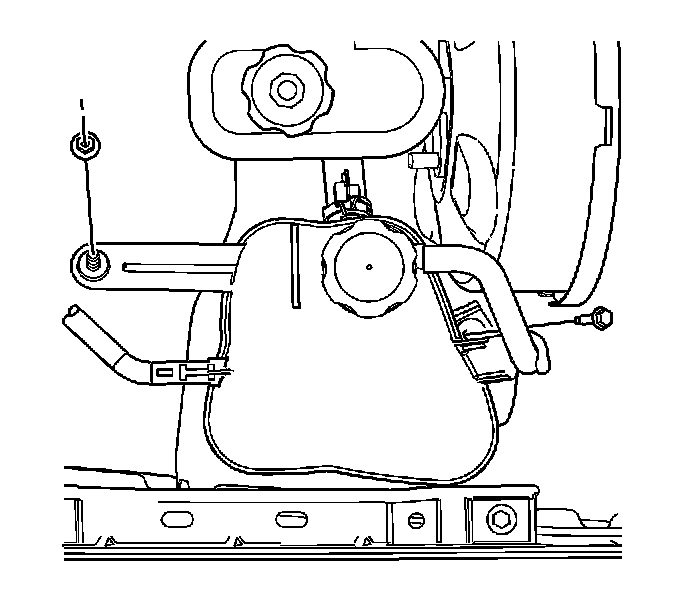

Left Hand Drive
Radiator Surge Tank Replacement (Left Hand Drive)
Tools Required
J 38185 Hose Clamp Pliers
Removal Procedure

1. Drain the coolant. Refer to Cooling System Draining and Filling (GE 47716 -Vac N Fill Coolant Refill Tool) (Service and Repair)Cooling System Draining and Filling (Static Fill) (Service and Repair) .
2. Disconnect the master cylinder fluid level sensor electrical connector and reposition aside.
3. Using the J 38185 , disengage and reposition the surge tank outlet hose clamp.
4. Disconnect the surge tank outlet hose.
5. Using the J 38185 , disengage and reposition the surge tank inlet hose clamp.
6. Disconnect the surge tank inlet hose.

7. Remove the surge tank bolt.
8. Remove the surge tank nut.
9. Disconnect the low coolant sensor electrical connector.
10. Remove the surge tank.
Installation Procedure
1. Install the surge tank.
2. Connect the low coolant sensor electrical connector.
Notice: Refer to Fastener Notice .
3. Install the surge tank nut.
Tighten the nut to 9 N.m (80 lb in).
4. Install the surge tank bolt.
Tighten the bolt to 9 N.m (80 lb in).
Important: Lubricate the inside diameters of the hoses with clean coolant prior to installation.
5. Connect the surge tank inlet hose to the surge tank.
6. Using the J 38185 , resposition the hose clamp to secure the surge tank inlet hose.
7. Connect the surge tank outlet hose.
8. Using the J 38185 , resposition the hose clamp to secure the surge tank outlet hose.
9. Connect the master cylinder fluid level sensor electrical connector.
10. Fill the cooling system. Refer to Cooling System Draining and Filling (GE 47716 -Vac N Fill Coolant Refill Tool) (Service and Repair)Cooling System Draining and Filling (Static Fill) (Service and Repair) .